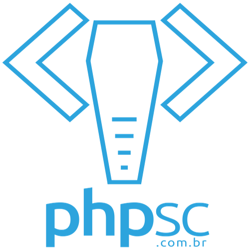

Sobre
Estamos indo para a 3º edição do Agile Floripa! Uma onda de cooperação ágil que vem crescendo em Florianópolis. Este evento veio como meio de fortalecer a comunidade manezinha e catarinense e proporcionar espaço para que as grandes atividades e inovações realizadas no nosso estado sejam compartilhadas de maneira transparente e horizontal!
Dando espaço aos palestrantes da terra e recebendo convidados de comunidades parceiras e profissionais com grande experiência, o Agile Floripa tem por objetivo se firmar no calendário dos eventos de agilidade nacionais e se tornar referência de conhecimento e compartilhamento.
Venha fazer parte desse movimento!
Nossas atividades são organizadas por um comitê voluntário que dedica tempo e expertise acreditando na cooperação e multidisciplinaridade. Nossas contas são abertas e administradas pela Agile Alliance Brazil - todo o lucro é revertido para iniciativas da comunidade.
Curso
-
\o/ BIS Treinamento Kanban (KMP I) + Ingresso FREE para o 3º Agile Floripa(condicionado a vagas disponíveis)
Aprenda a melhorar os processos da sua empresa de forma evolucionária, lidando com a resistência a mudanças e ajustando aos objetivos da sua organização. A Aspercom é pioneira no Brasil na aplicação do Método Kanban em pequenas, médias e grandes empresas nos mais variados setores. Com a nossa experiência você aprende neste treinamento como melhorar o seu processo de forma evolucionária - lidando com a resistência natural das pessoas a mudanças - tornando seu processo ajustado aos objetivos de negócio da sua organização! Este treinamento é certificado Lean-Kanban University (Kanban Method Professional I).
Rodrigo Yoshima
Técnico em Processamento de Dados e Bacharel em Administração de Empresas e Economia. É Advanced Accredited Lean Kanban Trainer (AAKT) e Kanban Coach Professional (KCP) pela Lean-Kanban University. Com mais de 20 anos de experiência na área de tecnologia, Rodrigo atua como consultor e instrutor em melhoria de processos tendo implantado métodos Lean e Agile em mais de 200 equipes em mais de 30 empresas. Casado, pai e velejador.
Valor: R$ 900,00
Data: 16 e 17 de março
Horário: 08:00 às 17:00
Local: CIASC
Local
R. Murilo Andriani, 327 - Itacorubi, Florianópolis - SC. Floripa, Santa Catarina
Grade
Nosso programa foi construído pela e para a comunidade a fim de atender todos os tipos de público e conhecimento, contando com profissionais locais em sua grande maioria. Qualquer mudança será comunicada no dia do evento ou pelas nossas redes sociais.
| Horário | Tema | Descrição |
|---|---|---|
| 08:30 | Credenciamento e Welcome coffee. | - |
| 09:00 | Transformação Ágil, a arte de transformar lagartas em borboletas! Integrare Consultoria e Capacitação | - |
| 10:00 | Porque eu deveria saber mais sobre Management 3.0? Createfy | Já ouviu falar de Management 3.0 mas não conhece muito e quer decidir se deve aprender mais sobre ele? Tem dúvidas se as práticas e ferramentas de Management 3.0 podem te ajudar a resolver problemas de gestão e organização no seu time e na sua empresa? Esta palestra vai te ajudar a entender como usar algumas das ferramentas mais úteis e quais situações elas se propõem a resolver. Além disso, vou te mostrar algumas das muitas ótimas fontes de pesquisa para você aprender mais sobre Management 3.0 e mudar o seu ambiente de trabalho (radicalmente ou de leve, você escolhe). Se isso não te ajudar a se decidir, não sei o que fará! =) Tenho utilizado e ensinado ferramentas de Management 3.0 em várias empresas nos últimos anos e vejo o como elas podem fazer muita diferença e resolver problemas já tidos como parte da cultura e das limitações de empresas, gestores (recém promovidos e experientes) e até mesmo de times auto-geridos. Esta palestra pretende gerar mais interesse do público no assunto e motivá-lo a sair das abordagens manjadas. |
| 10:40 | Coffee break | - |
| 11:10 | Não faça um MVP! Crafters Innovation Studio | Cada vez mais, os empreendedores acreditam que o MVP vai ajudar a transpor as barreiras financeiras de suas Startups, ao mesmo tempo que despendem um esforço desproporcional para construí-lo. Na maioria das vezes o MVP custa caro e traz pouco retorno. Muitas startup tem dificuldades para conseguir investimento mesmo com um ótimo MVP. Quando é que as startups vão entender que uma ideia e um MVP não é o primeiro passo? Qual é a alternativa? Nesta palestra, vamos tentar explorar alguns desses assuntos. |
| 11:50 | Métricas e indicadores ágeis, como está a saúde de seu time? Softplan | Esta palestra irá apresentar alguns indicadores utilizados por times ágeis para demonstrar eficiência e desempenho. O objetivo destes indicadores é exibir pontos para reflexões auxiliando sempre a melhoria contínua, instigando os times a saírem de sua zona de conforto. Não se trata de indicadores intrusivos, são indicadores criados e acompanhados pelo próprio time com a intenção de deixar transparente a seus integrantes o que deve ser melhorado e o que está bom. É muito citado nas literaturas gráficos burn down, fluxo acumulativo, indicadores para lead time e cycle time, estes são extremamente importantes, nos dão visão de previsibilidade e gargalos, porém se os times não estão maduros suficientes não os instiga a sair do status quo e buscar por novos desafios. A proposta é apresentar subjetividades em números, demonstrar o índice de story points reprovadas, o esforço em retrabalho que poderia ser economizado, fator de foco, medir fatores externos que podem prejudicar o bom andamento da execução da tarefa, como da previsibilidade assertiva a defeitos. O propósito é apresentar estes e outros indicadores que são utilizados na realidade atual de uma equipe de trabalho, para que possa servir como inspiração e base para outras. |
| 12:30 | Almoço | - |
| 14:00 | Escalabilidade sem perder agilidade na Resultados Digitais Resultados Digitais | A identidade da RD se traduz em seu Código de Cultura e tem orientado nossas decisões aqui dentro desde o começo. Uma organização baseada em valores como transparência, descentralização, autonomia e agilidade tem nos trazido aprendizados a cada etapa de crescimento e desafios. Vamos apresentar do ponto de vista de gestão de produto, engenharia e pessoas as decisões que tomamos nesse processo de crescimento, e como aplicamos a metodologia de OKRs, o modelo de estrutura aos moldes do Spotify e as nossas adaptações para manter a organização produtiva e sustentável. Ao final, vamos compartilhar um pouco das mudanças que temos em vista para o futuro próximo. Esperamos que a nossa experiência traga ideias e reflexões pra que você saia da palestra querendo atuar como agente de mudança também em sua organização! |
| 14:40 |
 O testador está morto! (Um novo conceito para os testes)
Adptworks
O testador está morto! (Um novo conceito para os testes)
Adptworks
|
- |
| 15:40 | Coffee break | - |
| 16:10 | Painel: Pra onde estamos levando a agilidade? | - |
| 17:10 | Encerramento + Sorteios e Happy Hour \o/ | - |
Palestrantes
-
09:00 Transformação Ágil, a arte de transformar lagartas em borboletas!
Annelise Gripp
Como consultora, seu trabalho consiste em expandir, compartilhar e aplicar seus conhecimentos, habilidades e experiências nas empresas, implantando projetos utilizando Metodologia Ágil (XP, Kanban, Scrum), Agile Coach (coaching aplicado a líderes e times) e Personal/Executive Coach (desenvolvimento de competências para alcançar resultados). Fundadora do Rio Agile. Nos últimos 7 anos se dedicou aos estudos das Metodologias Ágeis, onde projetos, produtos e pessoas desenvolvem um trabalho juntos, entregando software com rapidez, qualidade e satisfação, para o cliente e para equipe.
-
10:00 Porque eu deveria saber mais sobre Management 3.0?
Antonio de Campos
Agile Coach, developer, consultor em transformações ágeis, facilitador de treinamentos em Ágil, Scrum, Kanban e Management 3.0, co-fundador da Createfy e membro entusiasta em várias comunidades de agilistas no Brasil. Eternamente em busca de diferentes cenários de transição e amadurecimento da agilidade. Engajado em aprender e espalhar pelo mundo formas de organização de times e empresas que prezem pelo respeito às potencialidades e relações humanas para harmonizar criatividade, alegria, produtividade, bom humor e resultados. Explorando os limites da autogestão sem estar convencido de que realmente exista um limite!
-
11:10 Não faça um MVP!
Felipe Rodrigues
Empreendedor nato, fundou a Crafters Innovation Studio para ajudar empresas a desenvolver produtos com uma melhor proposta de valor. Especializado em inovação para novos modelos de negócio, customer discovery e análise estratégica de dados. Há 12 anos transformando sonhos em negócios.
-
11:50 Métricas e indicadores ágeis, como está a saúde de seu time?
Carlos Eduardo Polegato
Carlos Eduardo Polegato, desenvolvedor de sistemas e agilista, sete anos de experiência com ágil, participou da transição completa do modelo tradicional para o ágil de uma empresa de grande porte. Atualmente possuí o papel de líder de times de desenvolvimento de um sistema complexo, com mais de cem profissionais envolvidos, líder de mercado. Tem como função promover agilidade em escala, incentivar e facilitar boas práticas de engenharia de software, promover melhoria contínua e desenvolver profissionalmente os integrantes dos times. Formado em ciência da computação em 2007, possui pós-graduação em engenharia de software, MBA em gestão de projetos, certificação Scrum Master Professional e certificação SAFe practicioner.
-
14:00 Escalabilidade sem perder agilidade na Resultados Digitais
Rafael Justino & Victor Bernardo
Rafael Justino é Gestor de Produto na Resultados Digitais. Agilista, cristão, casado, pai. Analista de Sistemas que cansou de entregar certo a coisa errada. Hoje, une técnica e tecnologia com comunicação e relacionamentos, para construir produtos de software que realmente gerem resultados para os clientes e parceiros da Resultados Digitais. & Victor Hugo Bernardo é Gerente de Engenharia na Resultados Digitais, casado e pai da Heloísa. Apaixonado pela arte de Desenvolver Software e formar equipes de alta performance.
-
14:40 O testador está morto! (Um novo conceito para os testes)
Elias Nogueira
Agile Coach, Instrutor e QA Engineer. Elias Nogueira ajuda empresas e times a aplicar práticas ágeis em pequena e larga escala com um grande fooo em qualidade e teste de software.
Parceiros
-

-

- 
FAQ
0 - Preciso levar algo no dia do evento para comprovar minha inscrição?
R: Sim. Você deve portar um documento oficial com foto! Veja o restante do FAQ.
1 - O que acontece se eu não pagar a inscrição no prazo de 2 dias corridos?
R: Após 2 dias você receberá um email informando que a inscrição será cancelada. O cancelamento será efetivado caso o pagamento não ocorra em até 2 dias após o recebimento deste email.
2 - Fiz minha inscrição como estudante. O que acontece se eu não levar a carteirinha de estudante ou declaração original carimbada e assinada pela universidade?
R: O documento é obrigatório e caso não apresentado, só poderá ingressar na conferência mediante o pagamento da diferença do valor para a inscrição de última hora.
3 - Como faço para ter o desconto de estudante?
R: Para pagar o valor de estudante, você deve inserir o token a seguir no campo destinado a códigos de desconto durante a sua inscrição: 594efbe8fec649b417e7e47e0a735143
No momento do credenciamento, será necessário apresentar a carteirinha de estudante ou declaração original carimbada e assinada pela universidade.
4 - Quero levar a galera toda da empresa. Vocês tem algum tipo de desconto?
R: Para obter o desconto é preciso que o representante da empresa faça contato através do e-mail: contato@agilefloripa.com.br.
Temos duas faixas de desconto para inscrição em grupo da mesma empresa:
- Entre 5 a 10 pessoas concedemos 10% de desconto;
- Acima de 10 pessoas concedemos 15% de desconto;
5 - Se eu fizer a minha inscrição, mas não puder comparecer na conferência, eu perco meu dinheiro?
R: Não, você pode transferir gratuitamente para outra pessoa ou você pode solicitar devolução, mas nesse caso ela será parcial.
Em casos de devolução, o percentual de reembolso será calculado de acordo com a data do pedido do cancelamento, conforme a lista a seguir:
- até 28/02/2017: 70% do valor pago;
- a partir de 10/03/2017: 50% de restituição;
- a partir de 15/03/2017 (72 horas antes do evento): não há restituição.